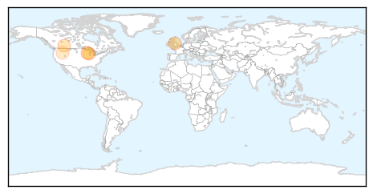
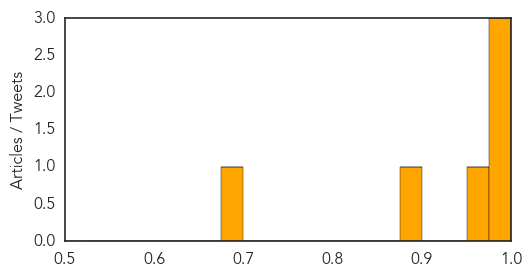
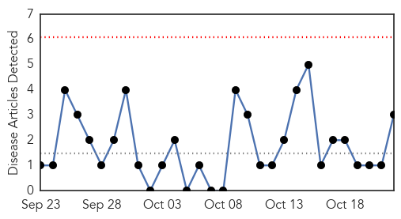
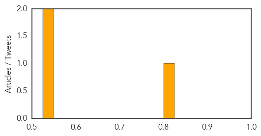

Influenza
30-Day Web Trend
0 alerts, 2 warnings
30-Day Twitter Trend
1 alerts, 0 warnings
Article Locations
Article Confidences
Top Articles:
- 0.989
- ‘Get Your Flu Shot, Not the Flu,’ Health Unit Urges, as Annual Flu Vaccination Campaign Kicks Off This Fall, NorthumberlandView.ca
- 0.986
- which diseases could still cause chaos?
- 0.985
- “You want to get it now:” Health officials urge you to get a flu shot
- 0.966
- Flu season starting strong in Wisconsin
- 0.883
- Immunization begins battle to beat flu bug 2014
- 0.675
- Hospital patients rarely wash their hands, may spread disease
Top Tweets:
-
No tweets found for Oct 22, 2014
Hepatitis
30-Day Web Trend
0 alerts, 0 warnings

30-Day Twitter Trend
0 alerts, 0 warnings

Article Locations
Article Confidences
Top Articles:
Top Tweets:
-
No tweets found for Oct 22, 2014